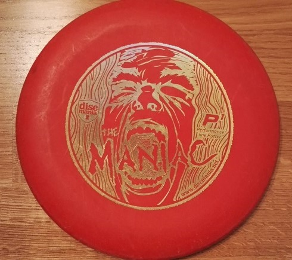
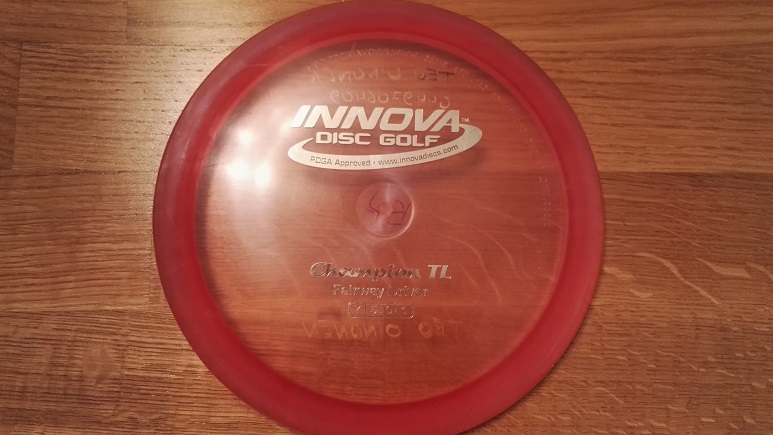
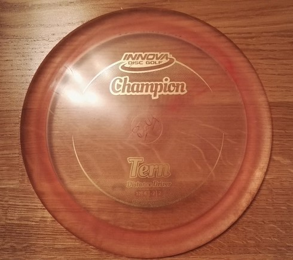

Harrastuksiini kuuluu kitaran soitto, frisbeegolf, tietokonepelit sekä tennis.
Kitaran soittoa olen harrastanut reilut 10 vuotta,
frisbeegolfia muutaman vuoden ja tietokonepelejä lähes koko elämäni.
Tennis on harrastuksistani tuorein, sillä olen aloittanut pelaamisen alle vuosi sitten.
Musiikki on ollut suuri osa elämääni koko elämäni. Olen aina tykännyt kokeilla kaikennäköisiä soittimia mitä näkökenttään on sattunut.
Myös musiikin kuuntelu on suuri osa jokapäiväistä arkea.
Kitaran soiton aloitin hieman yli 10 vuotta sitten, kun sain ensimmäisen sähkökitarani (ESP Ltd m-50) lahjaksi.
Nykyinen kitarani on Les Paul tyylinen sähkökitara Epiphone Prophecy LP Custom Plus EX-MS.
TÄSSÄ on kuva kitarastani.
Soitan kitaralla suurilta osin hieman raskaampaa musiikkia, sitä samaa jota tykkään kuunnellakin. Soitan enimmäkseen "lead guitar" roolia, jossa pääsee
sooloilemaan hieman enemmän.
Hyödynnän harjoittelussa hyötypeliä nimeltä Rocksmith. Pelissä on paljon opetusvideoita ja erilaisia haroituksia. Itse käytän peliä ihan soittamiseen.
Peliin voi ladata muiden pelaajien tekemiä "tabulatuureja" tuhansista eri biiseistä, joiden avulla voi soittaa kitaraa lempiartistien biisien soidessa taustalla.
Peli tunnistaa oikein ja väärin soitetut kohdat ja niitä voi hioa sektoreittain, kunnes kohdan oppii soittamaan täydellisesti.
Frisbeegolfin aloitin n. 5 vuotta sitten ystävien innoittamana. Laji vei mukanaan samantien. Se on loistava ajanviettotapa
kavereiden tai perheen kanssa. Harrastan lajia säännöllisesti puolen vuoden ajan (kevät-syksy) vuosittain Suomen säästä riippuen ja vuodenajoista johtuen.
Alla muutama kiekko jotka löytyvät tällä hetkellä bagistani:
Putteri - Maniac (Disc Mania)

Fairway driver - Champion TL (Innova)

Distance driver - Tern (Innova)

Tietokonepelit ovat olleet lähellä sydäntäni lähes koko elämäni. Aloitin pelaamisen jo hyvin nuorena kun saimme kotiimme Sega Megadrive pelikonsolin. Siitä lähtien vapaa-ajalla on tullut pelailtua enenmmän ja vähemmän, riippuen ajan riittävyydestä. Kilpailullisesti olen pelannut Counter-Strike: Global offensive peliä yritysten välisessä Kanaliigassa. Kanaliiga on kuitenkin pääasiallisesti enemmänkin työyhteisön kesken hauskanpitoa, johon leikkimielinen kilpailullisuus tuo mukavan lisän.
Aloitin tenniksen vuoden 2020 syksyllä, joten olen lajissa vielä hyvin alkutaipaleella ja pelikerrat menevät tarkkailessa omaa tekemistä ja keskittyen perusasioiden toimimiseen. Harjoittelemassa käyn kerran viikossa. Pelipaikkana toimii lähes aina Vaajakoskella sijaitseva Liikuntakeskus Hutunki.